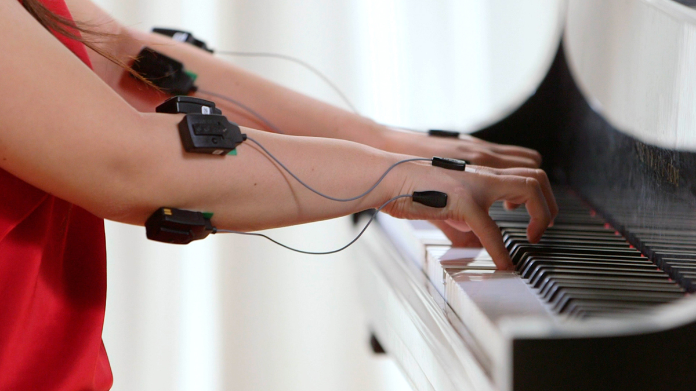

Pavan Punnamraju
Introduction
Ideas, to me, work like film does to a creative director. I pick a problem first, then learn whatever biology, math, or code it takes to make it real, using my team of AI agents to move faster. Pushback fuels that process, someone telling me straight up why something won't work is exactly how I find the version that does. That approach has taken me through 4+ projects, a head of product role at an AI-native healthcare consumer company, and a stack of courses from pancreatic cancer treatment to model quantization.
Right now I'm spending my time talking to oncologists, scientists, and people building in healthcare. I think fixing the fragmented systems slowing patient care down is just as real a way to contribute as treating patients directly.
If you're one of those people, or you just want to tell me why something won't work, let's talk.
05 / CLUBS

Triton Neurotech: EMG Piano
Built a real-time finger movement prediction system using EMG signals, wrist angles, and PyTorch, achieving 10 ms latency and full range of motion.
06 / EDUCATION
UC San Diego
Major: Human Biology
Graduation: June, 2028
Honors: Provost Honors
Selected coursework
- Cancer Biology BIMM 134
- Genetics BICD 100
- Intro to Python for Biologists BILD 62
- Neural Data Science BIPN 162
- Principles and Practice of AI CSE 5
07 / AWAY FROM THE DESK
Fun Stuff
Dance video placeholder · file pending